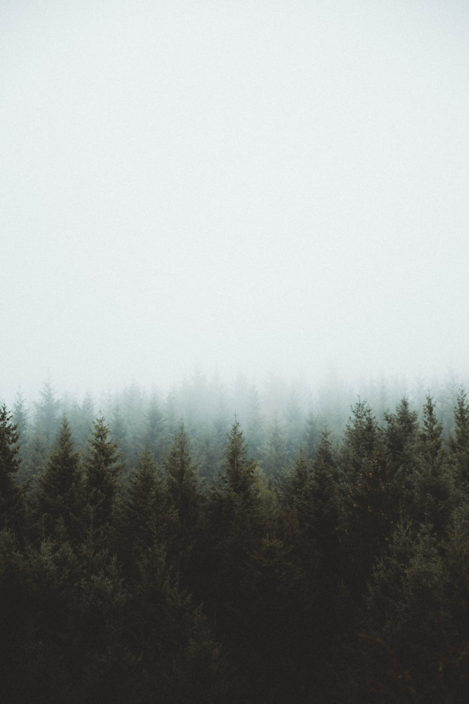
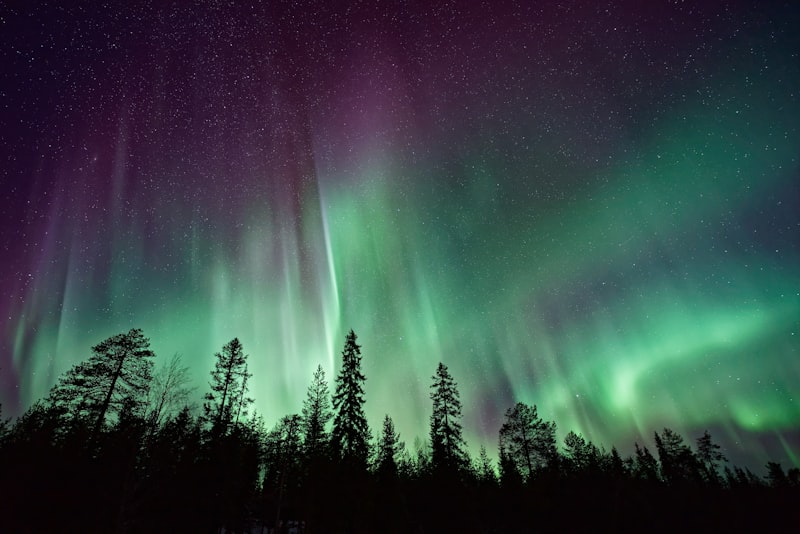
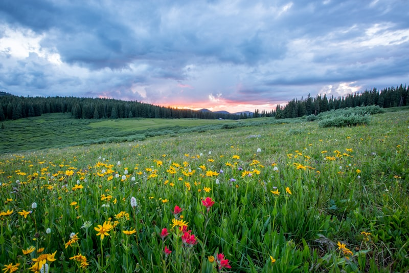
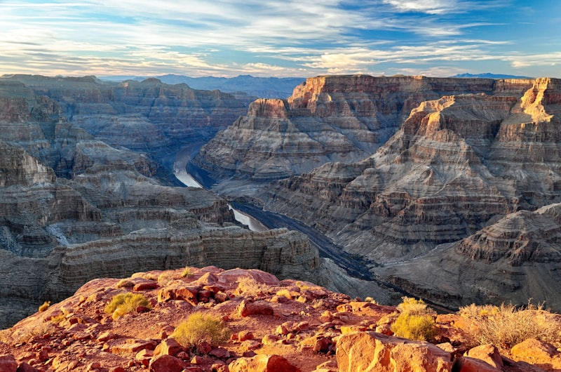

Landscapes of Wonder
Explore the unique stories, climates, and ecological structures of these iconic geographical features.

🏜 The Silent Deserts
Deserts are areas of land that receive less than 25 centimeters of precipitation annually. Despite their hostile, scorching conditions during the daytime, they host highly specialized plants and animals that have adapted to survive with minimal water resources.
🌸 Cherry Blossom Gardens
Cherry blossoms, or Sakura, represent renewal, spring, and the transient nature of life. Their pink and white blooms paint valleys in gentle pastels, attracting millions of visitors globally who celebrate the arrival of the warm season.

🏔 Northern Lights (Aurora Borealis)
The aurora borealis is a natural light display in Earth's sky, predominantly seen in high-latitude regions. It occurs when charged particles from solar winds collide with gaseous particles in Earth's magnetic atmosphere, resulting in glowing green, pink, and violet waves.

🌈 Atmospheric Rainbows
A rainbow is a meteorological phenomenon that is caused by reflection, refraction, and dispersion of light in water droplets, resulting in a spectrum of light appearing in the sky. It takes the form of a multicoloured circular arc.

🌲 Ancient Forests & Rainforests
Forests cover approximately 31% of the global land area, acting as critical carbon sinks and supporting over 80% of terrestrial biodiversity. From humid tropical rainforests to temperate pine woodlands, they maintain the oxygen-carbon cycle crucial for life on Earth.

🌋 Active Volcanic Peaks
Volcanoes are ruptures in the crust of Earth that allow hot lava, volcanic ash, and gases to escape from a magma chamber below the surface. They play an essential role in geological cooling and forming fertile soil over centuries.

🧗♂️ Deep Carved Canyons
Canyons are deep clefts between escarpments or cliffs, formed by the long-term weathering and erosive activity of a river. They expose layers of geological history, telling a visual story of billions of years of crust deposits.